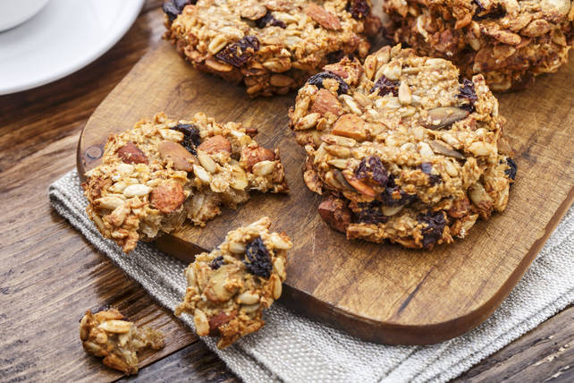

There is no less interesting cookie to me than a plain oatmeal cookie but if you are making them with granola they turn from mundane to magnificent. This cookie is so far superior in both taste and texture to regular oatmeal cookies that it might just be the best cookie.
There are certain cookies that require us to take sides. Are you a thin, chewy, crisp-around-the-edges chocolate chip person, or a thick, soft, cakey chocolate chip person? Do you want your gingersnaps to snap loudly, and cleanly in half, or bend quietly, and melt in your mouth? There are no wrong answers, but you have to pick. Well, what happens if you can't?
I like both styles of oatmeal cookies, or at least I like very specific parts of both. I like the texture of the thick, soft, chewy ones, but I prefer the toasty, caramelized flavor of the thin, crispy ones. So, instead of picking, I decided to try and have the best of both versions, and that was the inspiration behind this rather generic sounding Granola Oatmeal Cookie.
I wish I had a catchier, more exciting name for what I think is a major advance in oatmeal cookie technology, but I'll just have to rely on the incredible taste and texture to make these memorable. By adding already baked oatmeal, in the form of granola, we get the flavor of a crisp cookie, without sacrificing that addictively chewy texture. Now, if you'll excuse me, I'm going to enjoy a few with a cup of coffee, and work on that name. So, stay tuned for that, but in the meantime, I really do hope you give these a try soon. Enjoy!